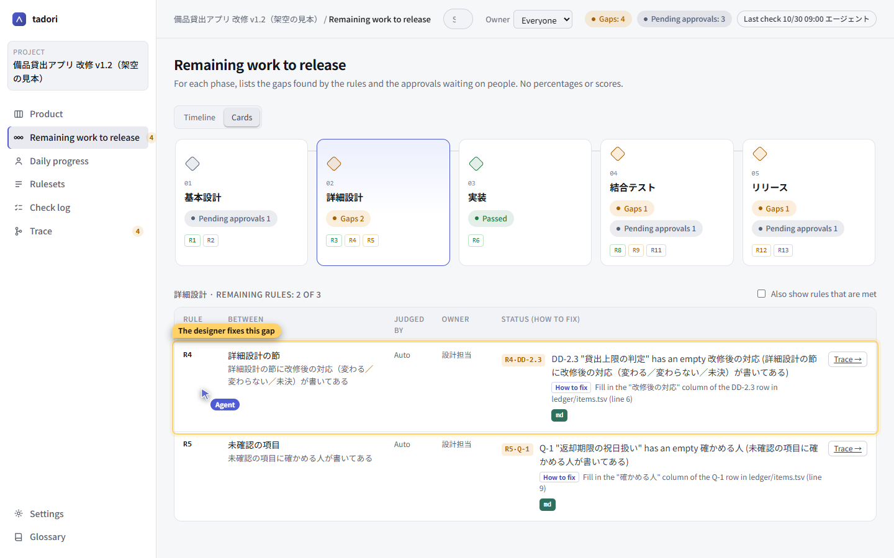
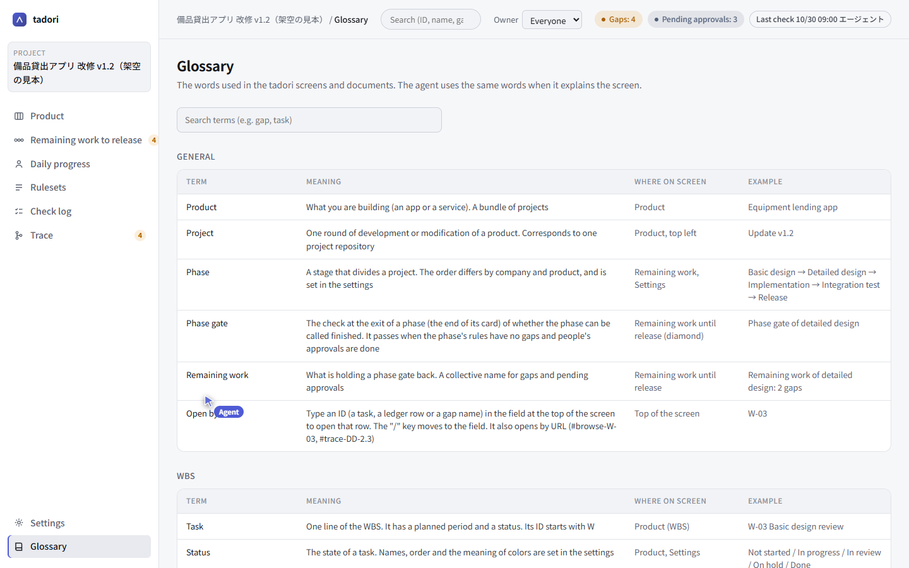

Let an agent guide you by pointing at the screen
Someone new has joined the team, and you need to explain what is blocking the release right now. Let an AI agent read tadori and explain while pointing with its own agent cursor inside the app. It never uses your mouse.
- MCP tools used
- how_to (usage guide), get_remaining (remaining work), list_leaks (gaps and fixes), trace, screen (agent cursor)
- What the agent doesn't do
- Approve, decide that a gap is fixed, record test results, push
1. Connect the agent
With Claude Code, one line connects tadori's MCP server, pointed at your project folder.
claude mcp add tadori -- node <tadori>/packages/cli/dist/main.js mcp <project-folder>A connected agent first reads start (getting started) and agent-rules (the rules it must follow) from how_to. The rules include “don't approve”, “don't decide that a gap is fixed” and “don't make up percentages or scores”.
2. Read the remaining work and the gaps
get_remaining returns the gaps and pending approvals per phase, and list_leaks returns the owner and fix for each gap. They go through the same checking core as the screen, so the results never disagree with it.
- R4·DD-2.3 DD-2.3 “Lending limit check” has an empty post-change impact
Owner: Designer Fix: write in the “post-change impact” column of the DD-2.3 row (line 6) of ledger/items.tsv3. Explain by pointing at the screen
Pass “point, click, type, go, say” to screen and the agent cursor moves on the tadori screen the person has open. It first shows “here” with a yellow frame and a short note, then clicks within the page.
{ "action": "go", "hash": "#phases-dd" }
{ "action": "point", "target": "R4·DD-2.3", "message": "The designer will fix this gap" }
You can keep using the same screen with your own mouse at the same time. The agent can only click what a person could click on screen — there are no shortcuts to checks or saving. It can't operate OS dialogs such as folder pickers, so it asks a person to do those.
4. Use the same words
glossary looks up the words used on screen (gap, phase gate, remaining work, task, trace), what they mean, and where they appear. When the agent explains things to people, it uses these words.
